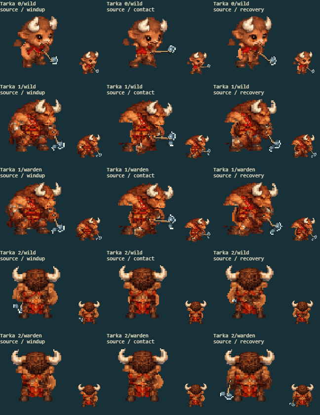
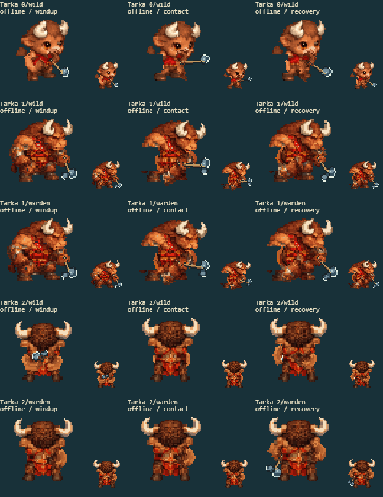

10 separate source/offline fights, covering every available form and path. The right panels show the actual cached sprite drawn in battle, before the hit-flash overlay, at native size and enlarged. The arena panel retains combat effects.
Full delivered-game screenshot · Contact inspection
| Factor | Result | Observed |
|---|---|---|
| Arm ownership | pass | Full-width brown fur, sleeve and hand outlines move with the arm; no generic narrow replacement is exposed. |
| Torso continuity | pass | The red/brown chest and scarf remain filled underneath the thick forearms. |
| Grip contact | pass | The axe handle meets the same painted grip throughout windup, contact and recovery. |
| Sprite completeness | pass | Complete horns, brown fur texture, red scarf and feet remain present across all available source/offline forms. |
| Motion and cell bounds | pass | The heavy arms remain attached through travel and falls; decoded source-sized and enlarged views keep every horn and cuff inside the cell. |


Original/current anatomy in all eight facings: authored form 0 · authored form 1 · authored form 2